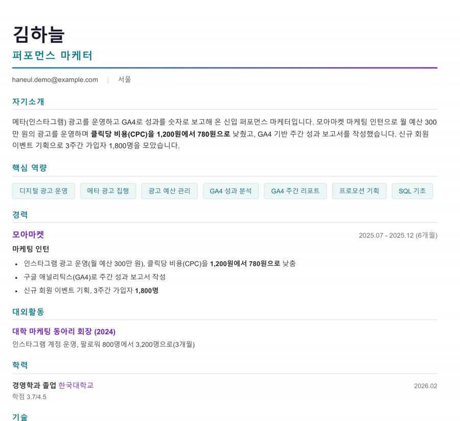
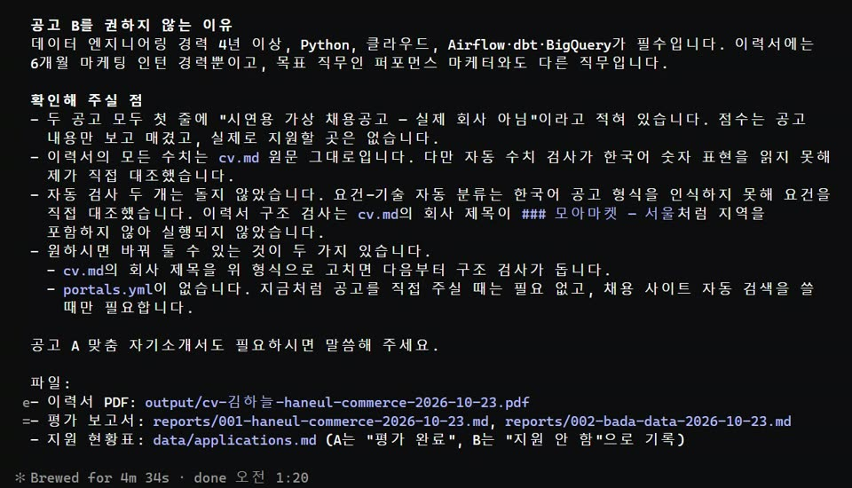

무료 오픈소스 career-ops를 Claude Code에 붙이면, 채용공고를 내 이력서와 한 줄씩 대조해 5점 만점으로 점수를 매기고 4점이 안 되면 건너뛰라고 알려 줘요. 4점이 넘는 공고는 그 공고에 맞춘 이력서 PDF까지 만들어 줘요. 지원 버튼은 언제나 내가 눌러요.

명령 프롬프트에 아래 '설치' 한 줄을 넣으면 career-ops 폴더가 생겨요. PDF를 만들려면 'PDF 준비' 한 줄도 넣으세요. 그다음 cd career-ops 로 들어가서 claude 를 실행하세요.
이력서 파일을 career-ops 폴더 안에 넣고 아래 '처음 설정' 문장을 보내세요. 이력서와 프로필 파일을 알아서 만들어요. 이력서에 없는 건 비워 두고 지어내지 않아요.
한국 채용 사이트는 자동 검색이 안 돼서, 공고 글을 복사해 파일(예: 공고A.txt)로 넣거나 대화창에 붙여 넣으세요. '공고 평가' 문장을 보내면 요건마다 내 이력서와 대조해서 5점 만점 점수와 지원 추천 여부를 알려 줘요.

4점 이상 공고는 공고에 나온 표현으로 자기소개와 핵심 역량을 다시 써서 PDF로 만들어요. 결과는 output 폴더, 평가 보고서는 reports 폴더에 쌓여요. 이력서에 없는 경험은 해 봤는지 먼저 물어봐요.
명령 프롬프트에
npx @santifer/career-ops init
설치 뒤 career-ops 폴더 안에서
npx playwright install chromium
이력서 파일을 폴더에 넣고 (괄호만 바꾸기)
처음 설정이에요. (이력서.txt)를 읽고 이 사람으로 career-ops 설정을 해 주세요. 언어는 한국어, 시장은 한국(modes/ko). 목표 직무는 (직무), 지역 (지역), 희망 연봉 (금액). 이력서에 있는 사실만으로 채우고, 없는 건 비워 두세요.
공고 글을 파일로 넣은 뒤
/career-ops (공고A.txt)와 (공고B.txt)를 평가해 주세요. 공고마다 5점 만점 점수와 지원 추천 여부를 알려 주고, 4점 이상인 공고는 그 공고에 맞춘 이력서 PDF까지 만들어 주세요. 한국어로요.
점수 높은 공고에
/career-ops (회사 이름) 공고에 맞춘 자기소개서 초안을 써 주세요. 이력서에 있는 사실만 쓰고, 초안은 제가 고칠게요.
도움이 되셨다면
@ai.antenna.kr
에서 바로 쓰는 AI 활용법을 계속 올립니다.